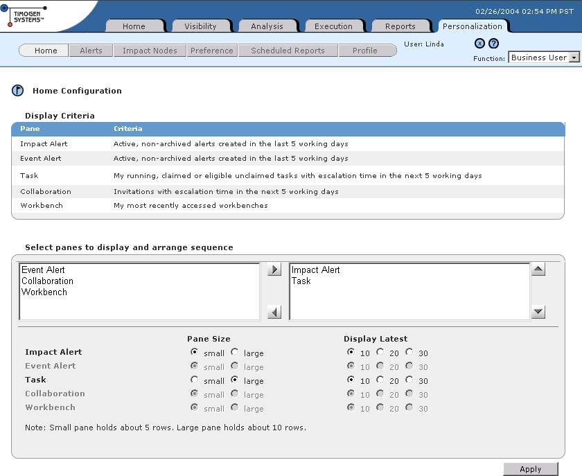

Configuring Home Page Sections
On your Business User Home page, you can configure what categories you'll see and in what order, and the maximum number of records to list in each category.
To configure
your home page
1 In the Function drop-down list, select Business User.
2 Click the Personalization tab, then click Home. The Home Configuration page
appears.

3 In the Select panes to display and arrange sequence section:
· For any pane you want to appear on your Home page, select it in the left-hand
list and click  . The pane moves into the right-hand list, which shows all the
panes on your Home page.
. The pane moves into the right-hand list, which shows all the
panes on your Home page.
· For any pane you want to remove from your Home page, select it in the right-
hand list and click . The pane move into the left-hand list, which shows all the
panes not shown on your Home page.
· To reorder the panes on your home page, select one in the right-hand list and
click to move it up or to move it down.
· To set the pane size for each pane on your Home page (shown in bold), select an
option in the Pane Size list. Small is up to 5 items. Large is up to 10 items. If you
have more items in the pane than you select here, you will have to scroll through
the pane to see them all.
· To set the maximum number of recent items for each pane on your Home page
(shown in bold), select an option in the Display Latest list. You can choose up to
the latest 10, 20, or 30 for each pane.
4 Click Apply.
Note: The Display Criteria section explains the contents of each pane.